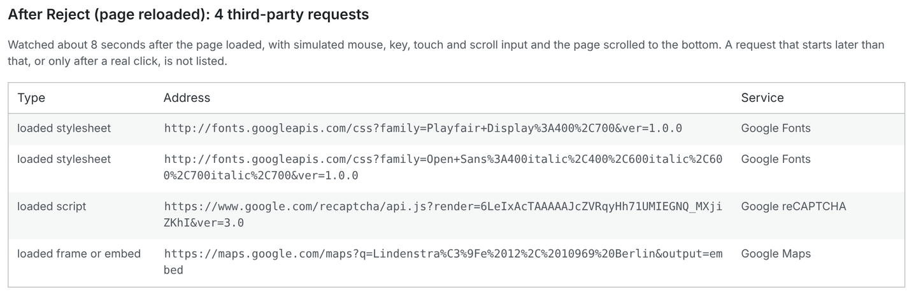
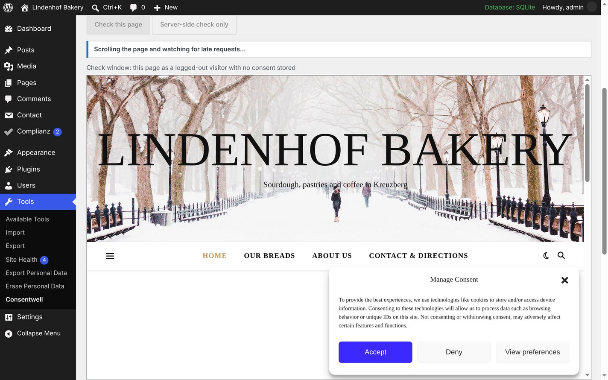
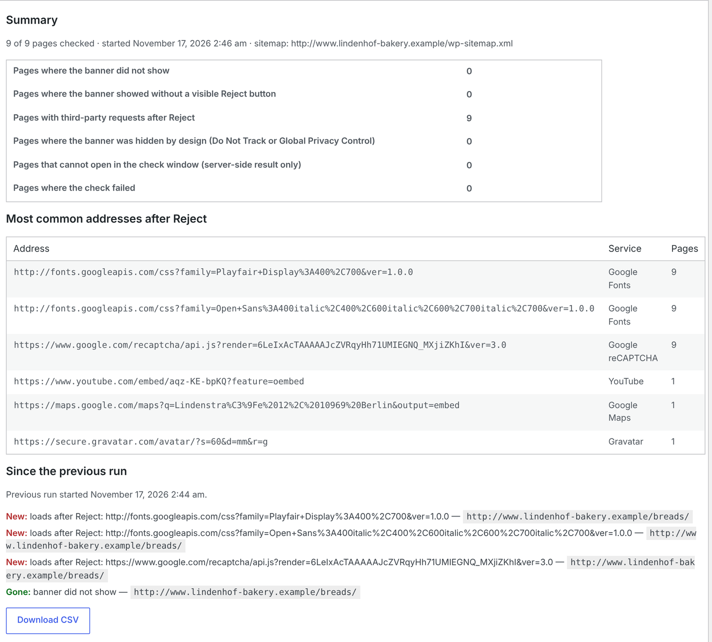

Consentwell for WordPress
Is your consent banner showing to visitors, and what still loads after Reject?

- See why it “doesn’t appear for visitors”
- See what loads “even when visitors reject”
- Stop assuming: be “100% certain”
Pro, $19 once: your sitemap in one run. Buy for $19
Free for any single page: consentwell.zip 1.0.1 · tested on WordPress 7.1.4 and 6.5.5, PHP 7.4.33 and 8.3.6, on Linux · source code included (GPL-2.0-or-later) · support@ochrestack.com
Above: after Reject on the contact page of a demo bakery site running Complianz Free (wizard defaults), the page still requested two Google Fonts stylesheets, reCAPTCHA’s api.js and a Google Maps frame, each with its full address. The words in quotes are from public posts on the WordPress.org support forums: “The consent banner is enabled … but it doesn’t appear for visitors.” “reCAPTCHA v2 loads on our homepage even when visitors reject optional cookies.” “I assume it does but would like to be 100% certain.” How the images were made.
What a check shows
Tools > Consentwell: pick a page, click Check this page, keep the screen open for about 20 seconds.


wp_footer(), and the result says so.Consentwell Pro: the sitemap in one run
- Check every page runs the check on the pages in your sitemap, up to 5,000 addresses, about 20 seconds a page with the screen open (120 pages take about 40 minutes). Pause and Resume.
- A summary, a CSV, and Since the previous run: what is new or gone after you fix something.

$19 once, unlimited sites, every future Pro update, no renewal · needs the free plugin, installed first (the download holds both) · Polar checkout · 14-day refund if it doesn’t work as described
Details
- Quick start: install, first check, reading the result, limits, how we tested.
- Needs WordPress 6.5+, PHP 7.4+ and an administrator account. Automatic Reject on Complianz and CookieYes; for another banner you click Reject yourself. Tested in Chromium. Windows and macOS are untested; the 14-day refund applies if it doesn’t work on yours.
- Checkout by Polar; the download arrives by email. Neither plugin sends anything to us or anyone else, and Pro never asks for the licence key Polar emails.
- GPL-2.0-or-later, source in both zips. The free plugin is not in the WordPress.org directory yet. Not affiliated with Complianz, CookieYes or Cookiebot. Support: support@ochrestack.com.